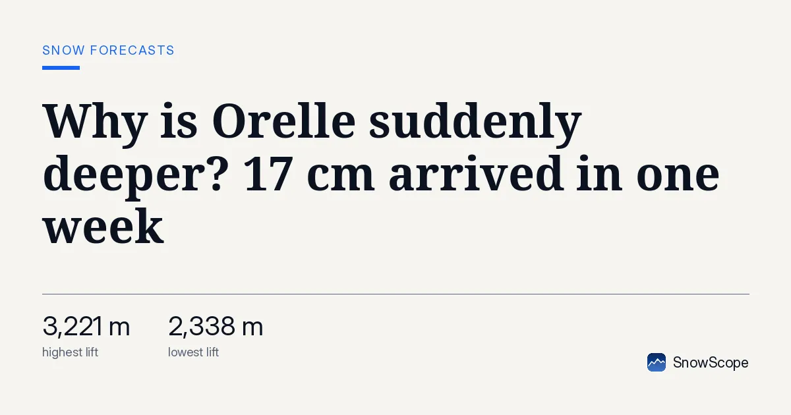

Why is Orelle suddenly deeper? 17 cm arrived in one week
Why is Orelle suddenly deeper? A week ago it held just 14 cm of snow. Today it reached 31 cm.
See the live snow forecast for Orelle in the SnowScope appSnow depth, powder alerts and the 3D map, free.
What changed in seven days
Orelle's snow cover grew from 14 cm to 31 cm in one week. That is 17 cm added, moving it closer to its usual early-season depth of 52 cm. The trend is clear: snow is building fast.
This growth matches forecast predictions. High resorts like Orelle, with peaks at 3,221 m, trap moisture and cold air, so they fill up sooner than lower valleys.
| # | Resort | Region | +24 h | +72 h | Snow line |
|---|---|---|---|---|---|
| 1 | Orelle | Alps · France | 41 cm | 103 cm | 2,500 m |
| 2 | Les Grands Montets | Alps · France | 44 cm | 100 cm | 2,100 m |
| 3 | Courmayeur | Alps · Italy | 37 cm | 100 cm | 2,300 m |
| 4 | La Grave | Alps · France | 40 cm | 98 cm | 2,900 m |
| 5 | Les Arcs | Alps · France | 39 cm | 96 cm | 2,000 m |
| 6 | La Thuile ski | Alps · France / Italy | 40 cm | 95 cm | 2,100 m |
| 7 | Glacier 3000 | Alps · Switzerland | 39 cm | 91 cm | 2,200 m |
| 8 | Valmorel | Alps · France | 25 cm | 87 cm | 2,000 m |
| # | Resort | Region | +24 h | +72 h | Snow line |
|---|---|---|---|---|---|
| 1 | China Peak | US West · United States | 6 in (14 cm) | 34 in (86 cm) | 5,900 ft (1,800 m) |
| 2 | Mammoth Mountain | US West · United States | 3 in (7 cm) | 30 in (77 cm) | 6,200 ft (1,900 m) |
| 3 | June Mountain | US West · United States | 3 in (7 cm) | 30 in (75 cm) | 6,600 ft (2,000 m) |
| 4 | Badger Pass | US West · United States | 3 in (7 cm) | 28 in (72 cm) | 5,600 ft (1,700 m) |
| 5 | Kirkwood | US West · United States | 1 in (2 cm) | 28 in (70 cm) | 5,900 ft (1,800 m) |
| 6 | Kingvale | US West · United States | 0 in (1 cm) | 27 in (69 cm) | – |
| 7 | Dodge Ridge | US West · United States | 2 in (4 cm) | 27 in (68 cm) | 4,900 ft (1,500 m) |
| 8 | Bear Valley | US West · United States | 1 in (3 cm) | 27 in (68 cm) | 5,600 ft (1,700 m) |
| # | Resort | Region | +24 h | +72 h | Snow line |
|---|---|---|---|---|---|
| 1 | Castle | Western Canada · Canada | 3 cm | 8 cm | 1,400 m |
| 2 | Pass Powderkeg ski | Western Canada · Canada | 2 cm | 7 cm | 1,400 m |
| 3 | Fortress | Western Canada · Canada | 0 cm | 6 cm | 1,300 m |
| 4 | Nakiska | Western Canada · Canada | 0 cm | 6 cm | 1,400 m |
| 5 | WinSport (Canada Olympic Park) | Western Canada · Canada | 0 cm | 6 cm | 1,500 m |
| 6 | Fernie Alpine Resort | Western Canada · Canada | 2 cm | 4 cm | 1,200 m |
| 7 | Island Lake Cat Skiing | Western Canada · Canada | 2 cm | 4 cm | – |
| 8 | Panorama | Western Canada · Canada | 1 cm | 4 cm | 1,300 m |

The next 24 hours: Alps go wet
In the next day, Orelle will see 41 cm of new snow on the upper slopes, on top of the 31 cm already down. Les Grands Montets adds 44 cm. These are the two largest accumulations in Europe for the next 24 hours.
The snow lines sit at 2,500 m at Orelle and 2,100 m at Les Grands Montets. Any run below these heights will see wet snow or rain. Expect slush at mid-mountain lifts.

72 hours: the Alps will be buried
Over three days, Orelle could see 103 cm of new snow at the top—a major change. Les Grands Montets gets 100 cm, Courmayeur 100 cm, La Grave 98 cm, and Les Arcs 96 cm.
One key point: 'new snow' means the forecast for upper slopes and assumes no wind or settling. Real totals will be less, especially lower down where more rain falls.
North America's quieter moment
Across the Atlantic, the picture is drier. China Peak, California's forecast leader, will get 34 in (86 cm) in the next three days—solid, but Europe is seeing more. Mammoth Mountain will add 30 in (77 cm), June Mountain 30 in (75 cm), and Badger Pass 28 in (72 cm). Western Canada is quieter; Castle will get just 8 cm.
This is early season, and both coasts are still waiting for the big storms. The Alps had the luck of the draw this week. That can change in days.
Height matters: read the snow lines
The 'snow line' in our forecast is roughly 300 m below the freezing level. It tells you where snow stops and rain starts. When the snow line is high (like 2,500 m at Orelle), only the summit slopes get dry snow. The base and mid-mountain get wet stuff.
On rock-strewn Alpine slopes, any new snow below the snow line can be thin, especially early season. Check official avalanche bulletins before heading off-piste, and remember that early November snow is often patchy. Good coverage depends on where the weather hits hardest.
What to watch
If you can ski in the Alps within the next 24 hours, aim for the highest accessible terrain at Orelle, La Grave, or Les Grands Montets. After that, lower runs will start to pack down and may turn to slush. The sweet spot is fresh snow on cold slopes, which you'll find at the top first.
Keep checking forecasts. Early-season systems can shift. Use the SnowScope app to see how the snow depth changes on your chosen slope, and remember that all these numbers assume no avalanche work, wind transport, or other factors on the day. Forecasts can change.
Tips for skiers
- Upper slopes at Orelle, La Grave, and Les Grands Montets will be where the best snow lands. Aim to ski above 2,500 m in the next 24 hours to stay in dry powder.
- Mid-mountain runs will see wet snow or rain instead of dry powder. The snow lines across the main resorts sit at 2,100 to 2,500 m.
- Check the official avalanche bulletin before going off-piste. Early-season snow is thin and can hide rocks; test slopes carefully.
- The best window is within the next 24 hours while the system is most active. After that, fresh snow will start to settle and become heavier.
- Watch the SnowScope app for forecast updates. Heavy snow systems can shift in position and intensity as they develop.
About these numbers
Resort snow depths are the deepest snow on the resort's upper slopes on the date shown; they are estimates for an area, not a measurement at one point. Forecasts can change. Always read the official avalanche bulletin before going off-piste.
Official avalanche bulletins: EAWS (Europe) · avalanche.org (US) · Avalanche Canada
Cite this report
For research, teaching or the press: the numbers and charts are free to reuse under CC BY 4.0 with this citation.
SnowScope (2026), Why is Orelle suddenly deeper? 17 cm arrived in one week, https://snowscope.app/blog/en/2026/11/where-most-snow-falls-next-72-hours-16-november-2026.html, accessed 2026-11-16
SnowScope (Atlas Labs). (2026, November 16). Why is Orelle suddenly deeper? 17 cm arrived in one week. SnowScope snow reports. https://snowscope.app/blog/en/2026/11/where-most-snow-falls-next-72-hours-16-november-2026.html
BibTeX
@misc{snowscope2026wheremostsnowfallsnext72,
author = {{SnowScope (Atlas Labs)}},
title = {Why is Orelle suddenly deeper? 17 cm arrived in one week},
year = {2026},
month = nov,
howpublished = {\url{https://snowscope.app/blog/en/2026/11/where-most-snow-falls-next-72-hours-16-november-2026.html}},
note = {Published 2026-11-16 10:36 UTC; accessed 2026-11-16}
}· CC BY 4.0 · Methods, data and tools →
Orelle: snow and temperature by height, this winter vs last (tools) →
Follow Orelle
Free: a message when fresh snow is coming, and the forecast every morning.
More snow reports

La Grave leads the Alps with 52 cm forecast in 24 hours as of 11 November; early snow arrives weeks before peak accumulation.

Forecast from November 12: US West gets 11 in (27 cm) of new snow Saturday November 14; 56 resorts receive powder, busy week starts.

The two-week picture in the US West, 17 November to 30 November, drawn from the two forecasts that reach two weeks, ECMWF and GFS. Middle of the …